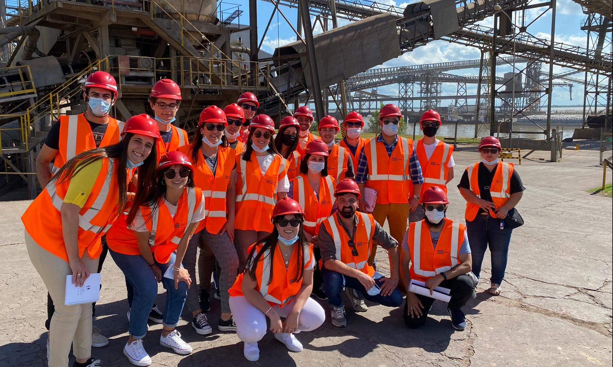
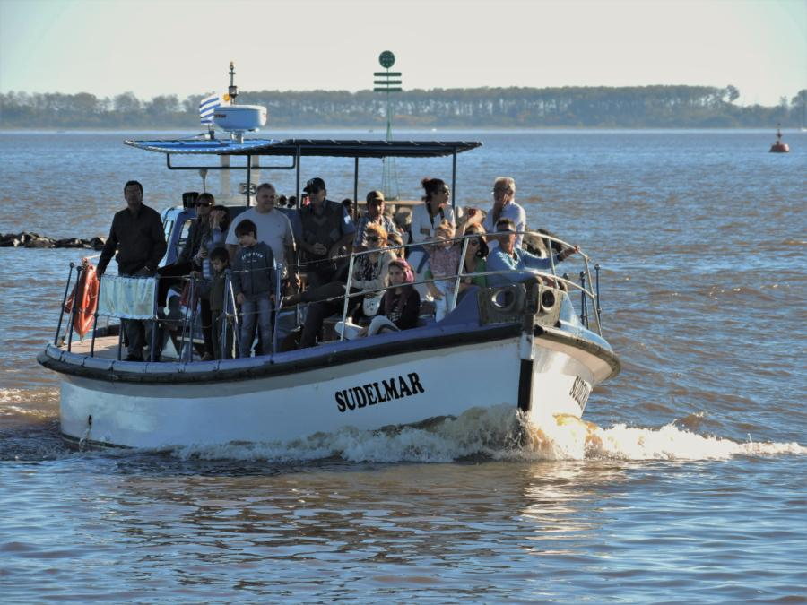
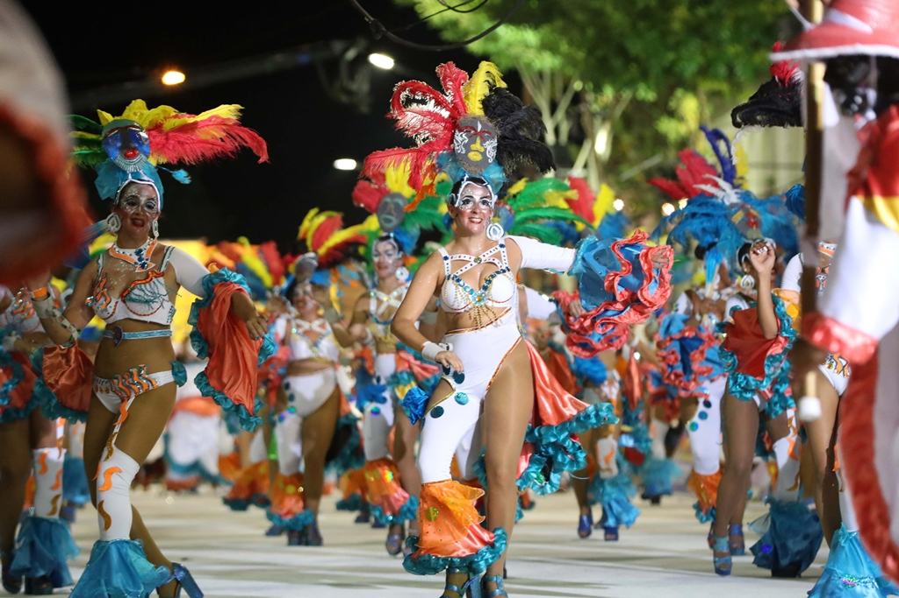

×

Paseo de la agroindustria

descubre la producción de frutas y verduras de la región en un recorrido único que te lleva a través de los campos y las plantaciones.
Recorrido por las islas

sumérgete en la belleza natural del río Uruguay en un paseo en lancha que te lleva a través de las islas cercanas y te permite disfrutar de impresionantes vistas panorámicas..
"El carnaval mas dúlce del país"

únete a la celebración del Carnaval de Bella Unión y disfruta de desfiles llenos de color y música en el auténtico estilo samba, con comparsas y escuelas de samba compitiendo por el título de campeón.